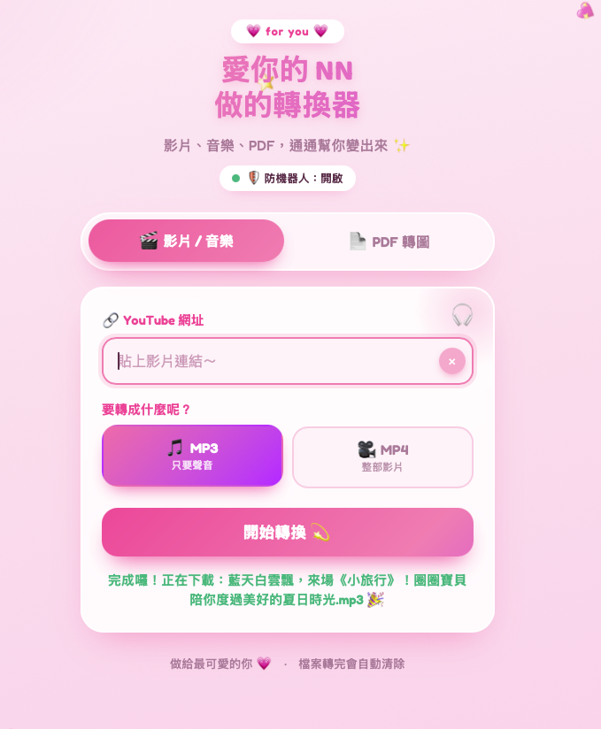
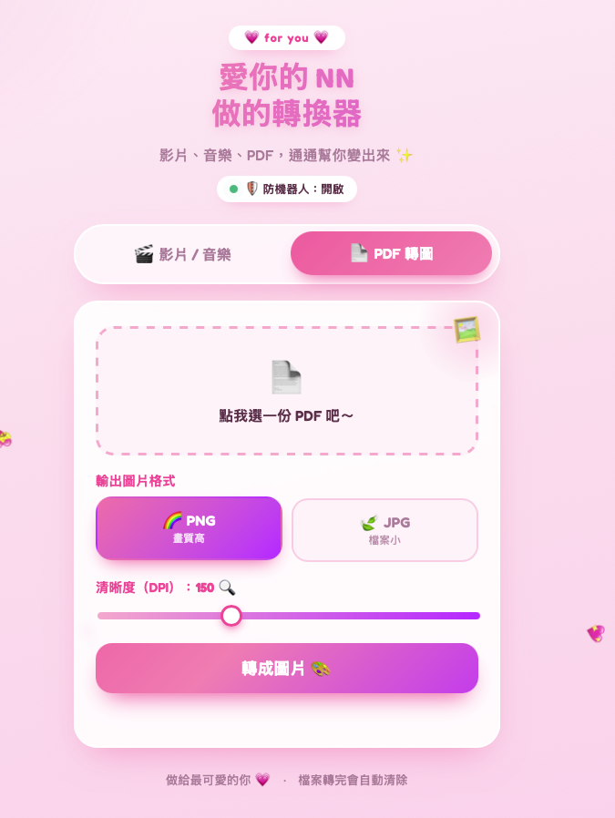

01 — 專案背景
轉檔這件事，不該被綁在一台電腦上
轉檔是很多人日常會用到的功能，但市面上的工具大多要下載安裝、綁定單一裝置，介面老舊、廣告干擾多，體驗普遍不好。
這個專案把轉換器搬上雲端，以網頁 App 的形式提供：打開瀏覽器、貼上連結、一鍵轉檔。同時我也把介面當成作品來設計，加入客製化的視覺風格，讓工具型產品也有好的使用體驗。
專案核心：工具的價值在於「隨手可用」。免安裝、跨裝置、流程極簡，加上有質感的介面——讓使用者每次要轉檔時，第一個想到的就是它。
02 — 問題與痛點
傳統轉檔工具的三個老問題
痛點 1需要下載安裝軟體，換一台電腦就要重裝一次，手機、平板更是無法使用。
痛點 2市面工具介面老舊、操作步驟繁瑣，還常夾帶廣告與干擾元素。
痛點 3臨時需要轉檔時手邊沒有裝好工具的裝置，需求當下無法被滿足。
03 — 解法與設計思路
雲端部署 + 極簡流程 + 客製化風格
系統部署在雲端，前端是網頁 App、後端負責轉檔處理。使用者的操作流程被壓縮到最短：貼上連結 → 一鍵轉檔 → 下載完成，不需要註冊、不需要安裝。
介面採用客製化風格設計，從配色、排版到操作回饋都經過刻意安排——跳脫市面轉檔工具千篇一律的老舊觀感，讓工具本身也是一個有設計感的產品。


Web AppCloud Deployment影音轉檔Custom UI DesignFrontend + Backend
04 — 我的負責範圍
前端到後端到部署，一人完成
- 1規劃產品定位與核心使用流程，把操作步驟壓到最少
- 2設計客製化介面風格——配色、版面與互動回饋
- 3開發前端網頁 App，確保桌機與行動裝置都有良好體驗
- 4開發後端轉檔處理服務，串接前後端流程
- 5部署至雲端環境，讓服務隨時隨地可用
- 6實測各種使用情境並調校，確保轉檔流程穩定
05 — 實作重點與難點
把工具做成產品的三個關鍵
實作重點流程極簡化：每多一個步驟就流失一批使用者。整個轉檔流程被設計成「貼上連結、按一下」——其餘的事都由系統在背後完成。
實作重點雲端架構：轉檔運算放在雲端後端執行，使用者裝置不需要任何效能負擔，手機也能流暢使用。
實作重點介面即體驗：工具型產品常忽略設計，這裡反其道而行——客製化的視覺風格讓產品有辨識度，用起來也更舒服。
06 — 專案成果 / 價值
從桌面軟體到隨開即用的雲端服務
產品成果
上線後，轉檔從「要先找對電腦、裝對軟體」變成「打開瀏覽器就能做」。跨裝置隨開隨用，流程簡化為貼上連結一鍵完成，加上客製化的介面風格，整體體驗遠勝傳統轉檔工具。
後續延伸：這套「雲端後端 + 網頁 App 前端」的架構可以直接延伸到其他工具型產品——批次處理、更多格式支援、會員與配額機制，都能在現有基礎上擴充。